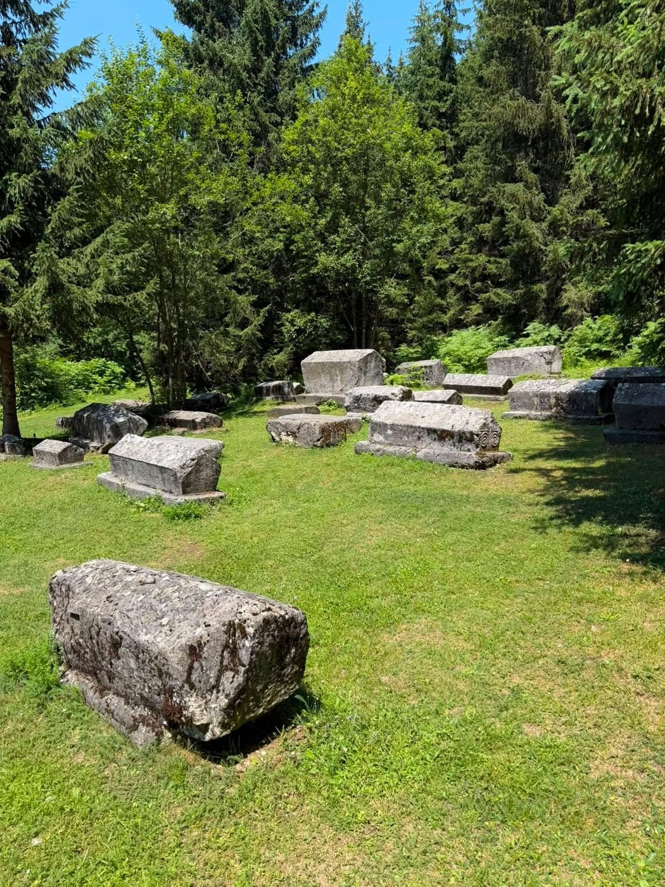

Босанска црква и расправа о дуализму
Средњовековна Босна налазила се на раскрсници Јадрана, српских земаља, Угарске и Византијског света. На том простору сусретале су се различите власти и хришћанске традиције. Присуство заједница названих крстјани и контакти балканских и западних верских група подстакли су дугу расправу: какав је однос постојао између Босанске цркве и богумилства?
Кратак одговор гласи да Босанску цркву не можемо аутоматски поистоветити са богумилском црквом. Извори сведоче о споровима, контактима и оптужбама за јерес; њихово тумачење и даље је предмет расправе. Овај прилог представља главна питања и раздваја средњовековну историју од модерних теорија које су прошлости често приписивале национално или политичко значење.

Црква коју је тешко одредити
Документација о Босанској цркви је неуједначена: обухвата повеље, преписку, верске текстове, сведочанства страних црквених власти и касније изворе. Израз крстјани јавља се за њене чланове, али нам извори не пружају целовит спис који би потпуно изложио њихову веру и организацију заједнице.
Спољни аутори неке групе називали су „јеретицима“, „патаренима“ или „манихејцима“; ти називи нису увек одговарали самоодређењу верника. Католичке, православне и политичке власти имале су различите разлоге да неку заједницу прикажу као одступничку. Полемичка ознака може сачувати важне податке, али не треба је третирати као неутралан опис.
Питање није само да ли је било дуалистичких утицаја. Треба разликовати присуство појединачних верника, ширење идеја, организовану мрежу и тврдњу да се цела Босанска црква поистовећивала са једним учењем. То су тврдње све ширег домета и захтевају различите доказе.
Докази о контактима и њихова тумачења
Неки западни извори повезују балканске средине са дуалистичким заједницама у Италији и јужној Француској. У расправи се јавља израз ordo Sclavoniae, повезан са кретањем проповедника, верских ауторитета и учења. Студија Пјотра Чарњецког реконструише учење приписано том окружењу на основу западних извора и разматра могућу улогу Босне у историји балканског дуализма.
Други истраживачи опрезнији су при извођењу ширих закључака из ових контаката. Георги Минчев, анализирајући текст повезан са Јованом Водоношом и досадашња тумачења, поново разматра питање дуализма у Босанској цркви. Текст или контакт који показује верске сродности може документовати ширење идеја; сам по себи не доказује да је цела босанска заједница делила иста веровања.
Мануел Лоренц у својој студији о односима богумилâ, катарâ и босанских хришћана предлаже процену дуалистичких утицаја која се разликује од ширих реконструкција. Поређење ових истраживања корисно је јер показује колику тежину расправа придаје фрагментарним текстовима, непријатељским сведочанствима и документима о контактима.
Три нивоа тврдњи која не треба мешати
- Контакти: постоје сведочанства која неке балканске средине повезују са ширим дуалистичким мрежама. Значење сваког документа процењује се у његовом контексту.
- Утицаји: поједине идеје и праксе могле су бити заједничке или преношене међу заједницама. Правац и обим сваког утицаја јесу историографска питања.
- Колективни идентитет: тврдња да је Босанска црква у целини била богумилска далеко је шира теза. Она не следи аутоматски из доказа о контактима или сличностима.
Ова разлика омогућава да се испреплетена духовна историја опише, а да се заједнице не сведу на једну ознаку. Она избегава и лажни избор: или је Босна била потпуно богумилска, или није имала никаквог додира са дуализмом. Између тих формула постоји широко поље истраживања.
Како је настала „богумилска теорија“ о Босни
Савремена расправа није остала ограничена на медиевистику. Од XIX века надаље, теза да је Босанска црква била богумилска коришћена је за објашњење каснијег присуства муслимана у Босни. Поједина тумачења тврдила су да је на прихватање ислама утицала наводна сродност богумилства и ислама. Та реконструкција могла је деловати привлачно јер је нудила једноставан континуитет између различитих епоха; сама претпостављена сличност, међутим, не доказује ни масовно преобраћење ни његове разлоге.
Истраживачица Инес Ашчерић-Тод реконструише порекло „богумилске теорије“ и критикује њену употребу као општег објашњења прихватања ислама у Босни. У чланку теорију разматра упоредо са другим националистичким и политизованим тумачењима и оспорава њене претпоставке и интелектуалну генеалогију. То је снажна историографска теза коју треба читати у целини; њен допринос у сваком случају показује зашто средњовековну хипотезу не треба претварати у идентитетску истину о садашњости.
Критика богумилске теорије не значи порицање верског неслагања или сваког дуалистичког утицаја у Босни. Она значи да треба питати шта доказује сваки појединачни извор и одбацити приче које модерне верске идентитете изводе из недоказаног континуитета.
Метод за истраживање балканске разноликости
Духовну историју региона треба реконструисати упоредним приступом. Поређењем домаћих и страних извора; разликовањем савремених докумената од каснијих списа; провером да ли је неки израз самоодређење или оптужба; раздвајањем доктринарне сличности од доказа о институционалној вези. Када истраживачи дођу до различитих закључака, сајт то јасно наводи уместо да неслагање прикрива привидном извесношћу.
Босна није споредна епизода у историји богумилâ, нити се може уклопити у српску или хрватску националну историју тако да изгуби посебност. Она је историјски простор са сопственим институцијама, заједницама и односима. Везе са Бугарском, Србијом, Византијом и Јадраном помажу да Балкан разумемо као област размене; оне не оправдавају брисање разлика међу његовим традицијама.
Значење овог поређења за пројекат
Пројекат доводи средњовековна неслагања у везу са савременим питањем слободе савести, али не тврди да постоји непосредно порекло између богумилâ, Босанске цркве и модерне Србије. Веза је филозофско поређење: шта се дешава када институције одреде једини легитиман облик вере и припадности? Како се чува сећање на мањине, а да се оне не претварају у измишљене симболе?
Поштовање Србије и Балкана не захтева да се читавом народу припише једна духовност. Оно подразумева признавање историјске разноликости, спорова и граница доказа. Та пажња, а не легенда о континуитету, омогућава озбиљан културни дијалог.
Извори и специјалистичке студије
- Piotr Czarnecki, “The Doctrine of the Ordo Sclavoniae in Light of Western Sources and the Issue of the Origins of the Dualist Heresy in Bosnia,” Studia Ceranea 12 (2022), 11–28. DOI.
- Georgi Minczew, “John the Water-Bearer: Once Again on Dualism in the Bosnian Church,” Studia Ceranea 10 (2020), 415–424. DOI.
- Manuel Lorenz, “Bogomils, Cathars and Bosnian ‘Christians’: The Transfer of Dualistic Heresy between Orient and Occident (11th–13th Century),” Historijska traganja 15 (2015), 9–66. PDF текст.
- Ines Aščerić-Todd, “Patarenes, Protestants and Islam in Bosnia: Deconstructing the Bogomil Theory,” Islam and Christian–Muslim Relations 33, бр. 3 (2022), 213–234. DOI; запис и сажетак у репозиторијуму Универзитета у Единбургу.
Овај чланак представља отворену историографску расправу. Извори сведоче о контактима и оптужбама у различитим контекстима; њихов значај за укупни идентитет Босанске цркве остаје предмет расправе.